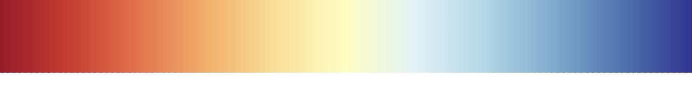

Remember this movie from before? Let's dive a little deeper so you can understand how AtmoFacts is improving direct measurement science.
An eddy covarience instrument takes thousands of measurements every second. Each time it takes a measurement, it records
the quantity of molecules of a specific variable (such as a greenhouse gas) and the meteorological data at that exact point in time.
That is a lot of raw data, so when these
measurements are analyzed, they are typically aggregated into a single value every half-hour or so
that represents the average measurement in the view of the instrument. The view of the instrument depends
on those meteorological conditions we mentioned before. This is what we see in the left panel
of the movie.
FluxMapper1™ acts like a flashlight in a dark room - illuminating the sources and sinks of target variables within the
view of the instrument. See how in the second panel of the movie you are able to see the spectrum of colors that
correspond to the quantity of the flux?

FluxMapper™ uses the high frequency molecular data alongside the weather data to precisely calculate the
locations and magnitudes of sources and sinks of fluxes. Since traditional analysis only provides a single
average value for each time period, FluxMapper1™ already provides the user with orders-of-magnitude more information for the exact same
instrument.
What you will notice about FluxMapper1™ is that the size and shape of that flashlight view is still limited by the meteorological conditions.
FluxMapper2™ eliminates this issue by turning on all the lights in your study site. We achieve this by integrating
in-situ processes and remote sensing data with artificial intelligence. FluxMapper2™ extends the view of that same instrument while keeping the
integrity of the results grounded in direct measurements.
Benefits of our technology
Source and sink attribution
Identifying areas of high and low emissions is crucial across sectors. Explore the interactive map of carbon dioxide fluxes below
to see what a FluxMap™ can tell you about a study site. The data used here is from a past research project using the US-PFa tower dataset
in Wisconsin, taken from a 120m tall flux tower
Direct measurement integrity
Measuring molecules directly eliminates the incompatibilities of complicated proxies and sector-specific techniques. Wide acceptance of
direct measurement techniques would lead to a benchmark for greenhouse gas monitoring.
Economic
When it comes to data coverage, one flux tower that uses FluxMapper2™ is about as economic as 10 of the same flux tower without FluxMapper2™. And that is without considering
the economic benefits of source and sink attribution.
Works on any flux system
Towers, aircraft, buoy, or any combination of the above.